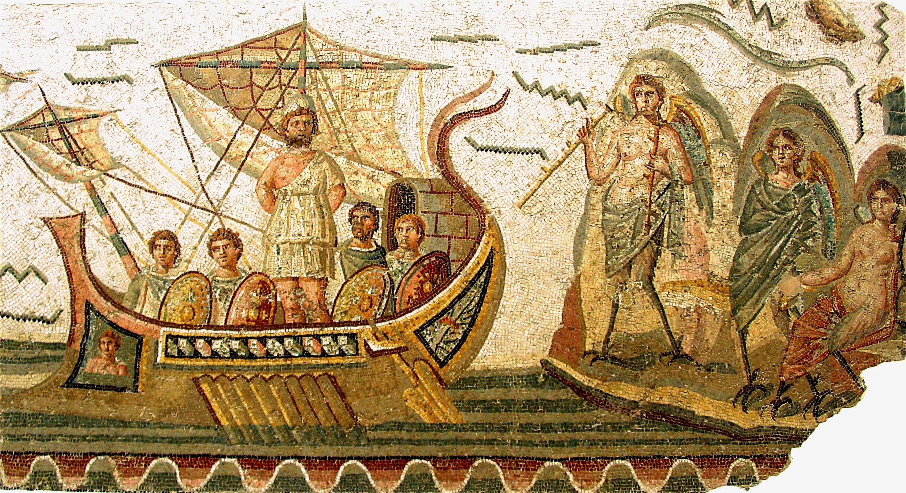

![]()
targets: prerequisites
command
command
commandI have a secret to confess: I have been writing code for over 20 years, and until about a month ago I have been loathe even to try descending into the depths of Make. For too long I have feared catastrophic implosion should I be reckless enough attempt to dive into these dark waters. Even now, as the sunlight fades and I pass below the surface into the treacherous realm of Almost Competence, I can hear the ominous sounds of compressive stress upon my psyche. I imagine betentacled krakenlike beasts of this realm outside the hull, the whispers of their hunting cry seeping into my tiny enclosed space as they call to the balrogs of open source…
Well actually…
…they hiss at me.
Drums, drums in the deep. I cannot get out. I shall have to complete this blog post in the hope that a wizard and his merry little troupe of clueless hobbits may one day discover the tale of my tragic descent.
Departing the Sunlit Uplands
Every tragic narrative begins with a fatal mistake, the hubris of the doomed heroine making one terrible choice that seals her fate well before the story gets underway: in this case, deciding that now is the time to read a 1200 page book on C++. Absolutely cursed decision. There was no way I wasn’t going to end up swallowed by a yawning hellmouth once that choice had been made. But as the saying goes, when descending into the abyss to be crushed by lovecraftian horrors, it’s all about the journey and not the destination.
Having opened the pages of the necronomicon, I first felt my soul turning toward the darkness as I considered the consequences of C++ being a compiled language, and my obsessive need to write my own code and take notes as I read the book. Barely one chapter in and I had written almost 50 baby C ++ programs, every one of them a helpless monster gnashing it’s tiny teeth in ravenous hunger demanding to be compiled before it can do anything useful.
Oh no, my precious abominations, I told them. I already have human children to feed and care for, I’ll not fall into the trap of lovingly passing each of you individually to the compiler for nurture and sustenance with bespoke hand crafted calls to clang++. That way lies madness and chaos. No, I shall hire a metaphorical nanny/butler/build-manager to feed you and compile you when you need compiling, to politely inform me each time a little C++ demon has grown into to a new binary file, and to take care of sundry other drudgeries with which I do not wish to be burdened.
And with that my doomed submersible slipped below the waves.
The decay of that colossal Wreck
As the light fades away visions of my Ozymandian future cross my eyes. I imagine the Works that I will construct, upon which even the Mighty will gaze and despair. Hints of make targets that I will specify and the wonders that will get built with automations.
Behold!
I have written a Makefile for my side project, an spell to feed my tiresome C++ babies into the maw of clang++, and render my markdown inscriptions into graven html with pandoc.
cpp_src := $(wildcard src/*.cpp)
cpp_out := $(patsubst src/%.cpp, bin/%, $(cpp_src))
pandoc_src := $(wildcard notes/*.md)
pandoc_out := $(patsubst notes/%.md, docs/%.html, $(pandoc_src))
all: dirs $(cpp_out) $(pandoc_out) docs/style.css docs/.nojekyll docs/CNAME
dirs:
@mkdir -p ./bin
@mkdir -p ./docs
bin/%: src/%.cpp
@echo "[compiling]" $<
@clang++-15 --std=c++20 $< -o $@
docs/style.css: pandoc/style.css
@echo "[copying] " $<
@cp pandoc/style.css docs/style.css
docs/.nojekyll:
@echo "[writing] " $@
@touch docs/.nojekyll
docs/CNAME:
@echo "[writing] " $@
@echo "learning-cpp.djnavarro.net" > docs/CNAME
docs/%.html: notes/%.md
@echo "[rendering]" $<
@pandoc $< -o $@ --template=./pandoc/template.html \
--standalone --mathjax --toc --toc-depth 2
clean:
@echo "[deleting] docs"
@echo "[deleting] bin"
@rm -rf docs
@rm -rf binIt is not very impressive, I know. But it does work, and it does help. So perhaps I should say a little about how I got to there from here?

Love me while your wrists are bound
Let’s begin at the beginning, and take account of a few important truths:
- Everything I know about Makefiles is from makefiletutorial.com. This post is not going to tell you anything you cannot find in Chase Lambert’s lovely tutorial.
- There are many alternatives to Make. I’ve seen many projects use CMake for build automation, for example. Alternatively, if you’re working in R you might prefer to use the targets package by Will Landau (user manual here). There is nothing particularly special about Make per se that made me decide to learn it: it just happens to be a thing that has been around for a long time, and it was irritating me that I didn’t know how to use it.
- Like all things created by humans, it is cursed. Makefiles are indeed the Night That is Dark and Full of Terrors. The red priestesses warned us.
The blood that circulates through the beating heart of every Makefile are its targets. Each target is defined using syntax that looks something like this:
It seems simple enough. The top level command provides the name of the target, with (optionally) a set of prerequisites associated with that target. The prerequisites are critical: the commands listed below the targets: prerequisites line will only be executed when one or more of the prerequisites has changed. This is the mechanism by which a Makefile can be used to track the dependencies among the various files in your project.
It seems lovely, does it not? Of course it does my sweet Odysseus. You’re listening to the Sirens, and fortunate indeed that your loved ones have tied you to the mast to prevent you from casting yourself overboard and drowning.
“But Danielle, this seems so simple! It is lovely, alluring and sweet. I see no sign of eldritch horrors or evil creatures lurking in the depths here”
You say that, so I presume that you have absolutely taken note of the fact that that the command lines in the code snippet above are indented with tabs and not spaces, yes? Those tabs are like little glass knives buried in the sand beneath your soft, bare feet. Make does not recognise spaces as indentations, and commands must be indented. You must use tabs for indentations when you use Make.
“But Danielle, my IDE is set to automatically convert tabs to spaces! This is going to mess me up and now I have to faff about making exceptions for specific files”
Indeed. Don’t say I didn’t warn you. Build automation is so so sweet, but This Syntax is Cursed. Nevertheless, let’s sip from the poisoned chalice and try writing a simple Makefile anyway. Perhaps we won’t die.
Our first Makefile
Here’s a very simple project:
fs::dir_tree("./examples/version1", all = TRUE)./examples/version1
├── .gitignore
├── Makefile
└── src
├── collatz.cpp
├── species.cpp
└── swap.cppLet’s look at its Makefile:
# the "all" target is a set of other targets
all: dir bin/collatz bin/species bin/swap
# the "dir" target creates a directory for the binaries
dir:
mkdir -p ./bin
# the "bin/collatz" target compiles the collatz.cpp program
bin/collatz: src/collatz.cpp
clang++ --std=c++20 src/collatz.cpp -o bin/collatz
# the "bin/species" target compiles the species.cpp program
bin/species: src/species.cpp
clang++ --std=c++20 src/species.cpp -o bin/species
# the "bin/swap" target compiles the swap.cpp program
bin/swap: src/swap.cpp
clang++ --std=c++20 src/swap.cpp -o bin/swap
# the "clean" target deletes all binary files
clean:
rm -rf binTo invoke this Makefile, assuming that the working directory is set to the project root folder and our file is named Makefile or makefile, all we have to do is type make at the command line. Normally that wouldn’t require us to change directories, because usually we’re working from the project folder, but because this is a blog post that contains several subprojects that each contain their own Makefile, I’ll include the bash commands used to change directories.
Let’s see what horrors escape our little Pandora’s box, shall we?
cd ./examples/version1
make
cd ../..mkdir -p ./bin
clang++ --std=c++20 src/collatz.cpp -o bin/collatz
clang++ --std=c++20 src/species.cpp -o bin/species
clang++ --std=c++20 src/swap.cpp -o bin/swapOkay, let’s look at the state of our project now:
fs::dir_tree("./examples/version1", all = TRUE)./examples/version1
├── .gitignore
├── Makefile
├── bin
│ ├── collatz
│ ├── species
│ └── swap
└── src
├── collatz.cpp
├── species.cpp
└── swap.cppTo be precise about what happened here, I invoked make without specifying a target to build. When that happens, make will use the first target in the file: in this case, “all”. However, because the “all” target is nothing other than a list of other targets that need to be built, what ends up happening is that make builds all those targets. Traditionally, this top-level target is called all, and it includes all the other targets needed to build the whole project.
What happens if you want to burn it all down and revert to the initial (unbuilt) state of the project? make doesn’t provide that functionality automatically, but it is traditional for writers of makefiles to include a target called clean that includes commands that will perform this clean up job for you (don’t include “clean” in the list of “all” targets, obviously: that would defeat the point entirely). For this project, clean up is really simple: delete the bin folder and everything in it!
To perform cleanup then, all we have to do is type make clean to invoke the “clean” target:
cd ./examples/version1
make clean
cd ../..rm -rf binAnd, just like that, we are back to the clean (unbuilt) state for our project:
fs::dir_tree("./examples/version1", all = TRUE)./examples/version1
├── .gitignore
├── Makefile
└── src
├── collatz.cpp
├── species.cpp
└── swap.cppReuse
Citation
BibTeX citation:
@online{navarro2023,
author = {Navarro, Danielle},
title = {Makefiles, or, the Balrog and the Submersible},
date = {2023-06-23},
url = {https://blog.djnavarro.net/posts/2023-06-23_makefiles},
langid = {en}
}
For attribution, please cite this work as: